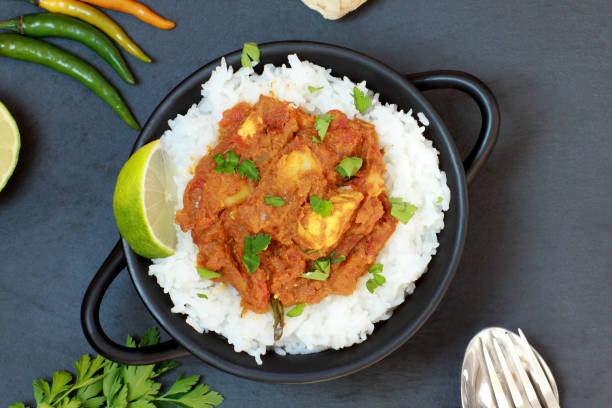

Meat Madras Curry

Madras Curry Recipe
Madras is an Indian curry consisting of pieces of meat, seafood or vegetables in a spicy, tomato sauce. The word
Madras refers to the use of a particular kind of curry powder - a precise mixture of herbs and spices from
southern India.
Ingredients - Chicken Madras (serves 3-4)
- 1 onion, peeled and quartered
- 2 garlic cloves
- small chucnk of ginger, peeled
- 1/2 red chilli
- 1 tbsp vegetable oil
- 1/2 tsp turmeric
- 1 tsp ground cumin
- 1 tsp ground coriander
- 1-2 tsp hot chilli powder
- 4 chicken breast
- 400g tin chopped tomatoes
- small pack of chopped coriander
- rice, naan and mango chutney to serve
Steps
- Blitz 1 quartered onion, 2 garlic cloves, a thumb-sized chunk of ginger and ½ red chilli together in a food
processor until it becomes a coarse paste.
- Heat 1 tbsp vegetable oil in a large saucepan and add the paste, fry for 5 mins, until softened. If it
starts to stick to the pan at all, add a splash of water.
- Tip in ½ tsp turmeric, 1 tsp ground cumin, 1 tsp ground coriander and 1-2 tsp hot chilli powder and stir
well, cook for a couple of mins to toast them a bit, then add 4 chicken breasts, cut into chunks. Stir and
make sure everything is covered in the spice mix.
- Cook until the chicken begins to turn pale, adding a small splash of water if it sticks to the base of the
pan at all.
- Pour in 400g can chopped tomatoes, along with a big pinch of salt, cover and cook on a low heat for 30 mins,
until the chicken is tender.
- Stir through small pack of coriander and serve with rice, naan and a big dollop of mango chutney.